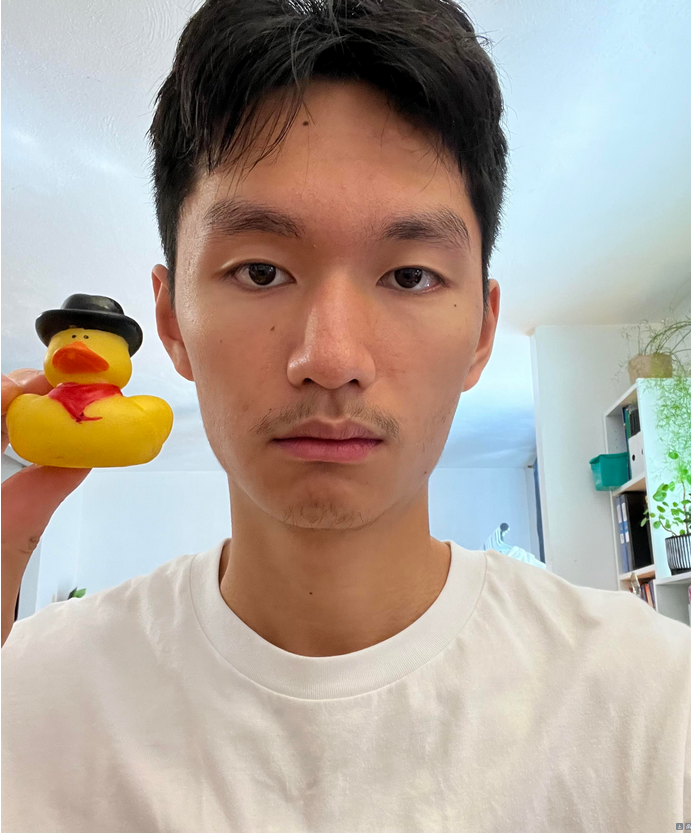
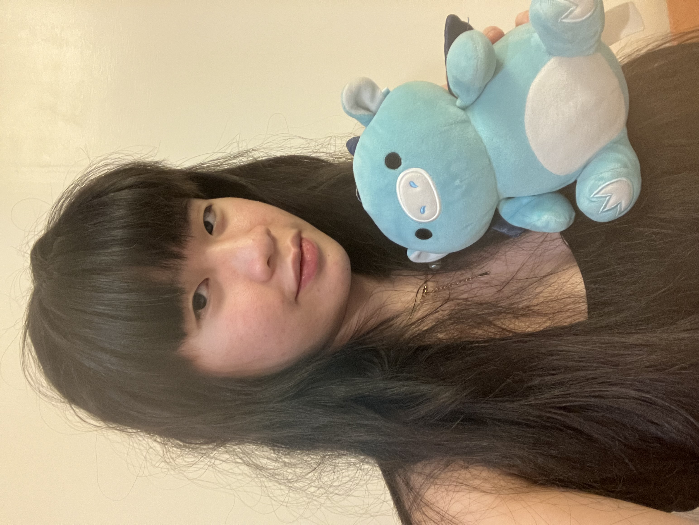

Hello, my name is Vincent and my duck's name is Donald. Due to an unfortunate turn of events in 1857, Donald was separated from his family at the tender age of 4, and was forced to survive as an outlaw in the Wild West. He specialized in train robberies by stealing each coal one by one out of the steam engine until the train had no more fuel, a process that took many weeks for one heist. His exploits became so legendary that a cartoon character and a United States president were both named after him. Now retired, Donald helps me with my CS homework, though I am unsure of his motivations for doing so.

Hello, I’m Megan Kwok and this is Grey. I adopted him back in June 2022 from a good friend in eighth grade, and since then, he has been the sole recipient and co-solver of all my CS problems.
click this!
Ethics